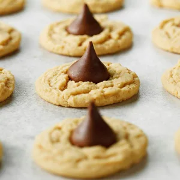

Peanut Butter Blossom Cookies

Peanut butter blossom cookies are a classic for a reason!
When you nestle a chocolate kiss into a chewy and soft peanut butter cookie,
you create a holiday cookie that's hard not to love.
Ingrediants
- Peanut Butter
- Sugar
- Butter
- Baking soda and baking powder
- Chochalate kisses
Steps
- Preheat the oven to 350°F. Cream the softened butter, peanut butter, sugar and brown sugar until light and fluffy, five to seven minutes.
- Beat the egg into the creamed peanut butter mixture.
- In another bowl, sift together the flour, baking soda, baking powder and salt. Beat the flour mixture into the peanut butter mixture.
- Drop by level tablespoonfuls spaced 2 inches apart onto ungreased baking sheets. Bake until light brown, 10 to 12 minutes.
- Remove the peanut butter blossom cookies from the oven, and immediately push an unwrapped chocolate kiss into the top of each cookie.
Cool the cookies on the baking sheet for two minutes.
Transfer the cookies to wire racks, and let cool completely.
Return Home